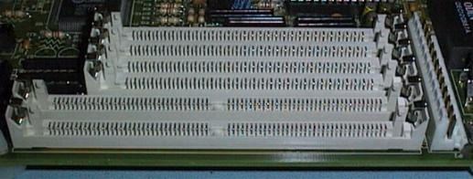

Phil Storrs PC Hardware book
Connectors used with PC Computer hardware
Connectors on the backplane of a PC Computer
This is the back of an old CGA video card (colour graphics adaptor)
The left connector is a DB9S and supplies the video and sync. signals to an RGB type monitor
The other connectors are RCA connectors (also used on the back of audio equipment)
and these supply composite video signals to suitable monitors

This is the back of an old MDA video card (mono display adaptor)
The DB25S connector on the left provides a parallel interface, usually to a printer
The DB9S connector supplies video and sync signals to a TTL type monitor
These two connectors are used to provide serial interfaces
The serial ports can use either nine pin or 25 pin DB connectors
The connector on the left is a DB25P and the other one is a DB9P
The DB25S connector on the left provides a parallel port,
the DB15S connector is the Games Port and interfaces a Joy Stick device
The old EGA video system also used a DB9S connector
This card also has two RCA connectors for composite video signals
and a set of dip switches to set up the video card
VGA video systems use a miniature DB15S connector
This connector is the same size as a DB9 connector but has three rows of pins
This is the back of a network card has
A BNC coaxial connector on the left
an RJ45 connector in the middle
and two LEDS to show network activity on the right
A 5 pin DIN connector was originally used to interface the Keyboard to the computers System Board.
This connector is also used in Audio equipment to connect Tape Decks to Amplifiers.
More and more modern PC hardware is using a miniature six pin DIN connector. This board has both types.
This connector is usually called a PS/2 connector because it was first used by IBM in the PS/2 range of computers.
Connectors inside the PC Computer
This I/O card has two ten pin Header connectors that connect the serial port DB connectors to the board
The board has its DB9P connector on the backplane of the board and its DB25P on a separate backplane
The top left 40 pin Header connector is used to connect IDE inteface Hard Drives to this card
The right hand 34 pin Header connector provides the Floppy Disk Drive interface
On the lower portion of this card is an extensive Jumper Block, used to configure the card
The 40 pin Header connector along the top of this board provides the IDE Hard Drive interface
The 34 pin Header connector along the left hand side provides the Floppy Drive interface
Note the two large Jumper blocks on this card
These two connectors are used to connect to floppy disk drives
The 34 pin Header connector on the left connects to a 3.5 inch drive
The 34 pin Edge connector on the right connects to a 5.25 ich drive
Power is supplied to the System Board via this 12 pin connector

The PC Power Supply usually has four types of connectors attached to it
The two connectors on the left plug into the above connector on the System Board
The disk drive connectors are the two connectors on the right
The larger connector is used on 5 1/4 inch Floppy Disk Drives and Hard Disk Drives
The smaller connector is used for 3 1/2 inch Floppy Disk Drives
30 pin SIMM (single Inline Memory Modules) use this special 30 pin socket
30 pin SIMMs provide RAM that is eight bits wide (9 bits with parity) per module

72 pin SIMM (single Inline Memory Modules) use this larger 72 pin socket
72 pin SIMMs provide RAM that is 32 bits wide (36 bits with parity) per module
The latest RAM package is the DIMM, Dual Inline Memory Module

The DIMM package provides RAM that is 64 bits wide and uses a 168 pin edge connector
This image shows the ISA bus sockets (the black edge connectors) and
The VESA local bus extension sockets (the brown sockets) on the end of the ISA sockets
The current local bus technology is PCI
The PCI bus uses these white edge connectors
Note: they are not inline with the ISA slots
Example of a Pentium II System Board with an AGP socket
The Advanced Graphics Port (AGP) was introduced towards the end of 1997. This is called a Port rather than a Bus because it is intended for a particular purpose, rather than as a universal bus slot. AGP is based on the latest PCI specification (ver 2.1), running at 66 MHz instead of 33 MHz like all existing PCI Bus cards, and having three extensions to the PCI specification.
Copyright © Phil. Storr, last updated 26th December 1998